Wallpaper patterns - the mathematics
Below we describe the four basic transformations, translations, reflection, rotation and glide reflection that all patterns are mode of; the 17 different Wallpaper patterns the Freize groups, cyclic group and dyhedral groups. Further sections describe the alternative orbifold notation and how orbifolds can be used to find the Chromatic number of each pattern giving the minimum number of colours needed to colour symmetrical tilings so that no two tiles of the same colour share an edge.
Separate pages give more details on group theory and the mathematics behind the code.
Basic transformations
The wallpaper patterns are produced by combining a number of transformations. The basic transformations are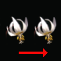 |
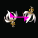 |
||
| A translation | A reflection - M | A glide-reflection: a translation follow by a reflection - G | |
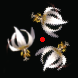 |
|||
| 180° rotation - P2 | 120° rotation - P3 | 90° rotation - P4 | 60° rotation - P6 |
Each wallpaper pattern is based on a pair of translations in different directions. The translations are applied multiple times to give a repeating image. This defined a regular grid of points called a lattice. |
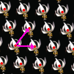 |
The blue shape in the program is called the fundamental domain. The image inside it is translated, rotated and reflected to produce the final image. The yellow parallelogram is one cell in the lattice, the image inside every other cell will be identical to this. |
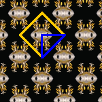 |
The symmetry lines can be shown. In this pattern the final image is produced by reflecting in the magenta lines. This pattern also has rotational symmetry: each cyan-rectangle is a center of 180° rotation. |
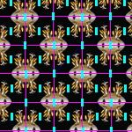 |
|
Some groups allow some flexibility in the shape of the fundamental domain.
For instance the P1 group allows curved edges as used
in some of Escher's woodcuts.
Here, for simplicity, the fundamental domain is restricted to be a polygon
although alternate version of the P1 and P2
rules based on hexagonal cells and the P31M rule
with a kite-shaped fundamental domain.
Other groups are more restrictive, if the group contains rotation points then the fundamental domain must pass through these point and if the pattern contains a line of reflection then that line will form one edge of the fundamental domain. |  |
The patterns
| Lattice type: parallelogram | |||||
|---|---|---|---|---|---|
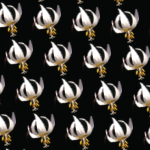 | P1: the simplest pattern, two translations in different directions. | 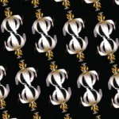 | P2: this pattern has an extra 180° rotation. | ||
| Lattice type: diamond | |||||
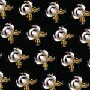 | CM: a reflection along a diagonal | 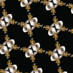 | CMM: two reflections along the diagonal | ||
| Lattice type: rectangle, the translations are at right angles | |||||
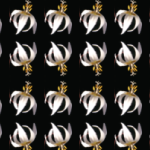 | PM: A reflection | 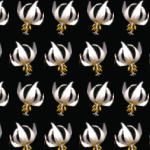 | PG: A glide reflection | ||
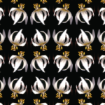 | PMG: A reflection and a glide reflection | 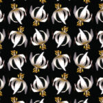 | PGG: Two glide reflections at right angles | 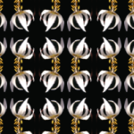 | PMM: Two reflections at right angles |
| Lattice type: square | |||||
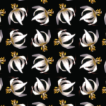 | P4: a 90° rotation | 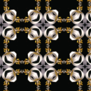 | P4M: a 90° rotation and a reflection | 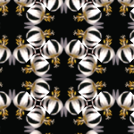 | P4G: a 90° rotation and a glide-reflection |
| Lattice type: hexagon | |||||
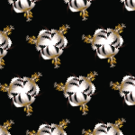 | P3: a 120° rotation | 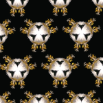 | P3M1: a 120° rotation and a reflection. Line of reflections pass through opposite vertices of the hexagon | 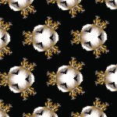 | P31M: a 120° rotation and a reflection. Line of reflections pass through centers of the edges the hexagon |
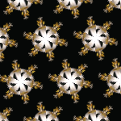 | P3: a 60° rotation | 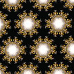 | P3M: a 60° rotation and a reflection | ||
Frieze groups, cyclic groups and dihedral groups
As well as the wallpaper groups their are three other families of symetries in the plane.
- The seven frieze groups
- An infinite family of cyclic groups: rotations around a point.
- An infinite family of dihedral groups: generated by two lines of reflection which pass through a point.
Whilst the wallpaper groups repeat in two directions the frieze groups only repeat in a single direction
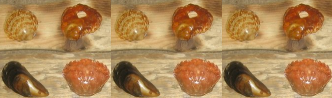 |
F1 translation in one direction Symmetry of the infinite sequence of letters pppppp |
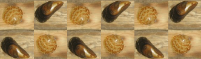 |
F2 a glide-reflection pdpdpd. |
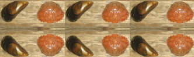 |
F3 translation and a parallel reflection CCCCCC |
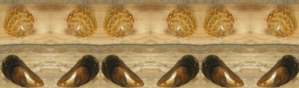 |
F4 translation and a pair of parallel reflections pqpqpq |
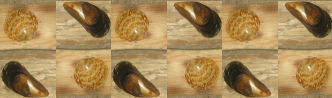 |
F5 translation and 180° rotation pdpdpd |
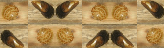 |
F6 translation and a perpendicular reflection and 180° rotation pdbqpdbq. |
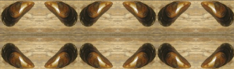 |
F7 translation, perpendicular reflection, parallel reflection XXXXXX. |
Frieze groups are often found in decorative borders. The top border of this page is F2 and the left hand side border is F4.
The cyclic and dihedral groups all have rotational symmetry about a single point. Cyclic groups have n-fold rotation symmetry (rotation by 360°/n). Dihedral groups have an n-fold rotational symmetry and two reflections in lines at 180°/n to each other.
| Cyclic groups | ||||
| C2 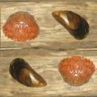 |
C3 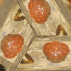 |
C4 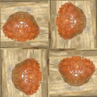 |
C5 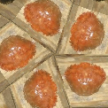 |
C6 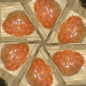 |
| Dihedral groups | ||||
| D2 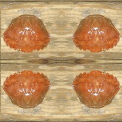 |
D3 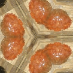 |
D4 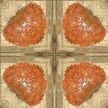 |
D5 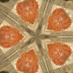 |
D6 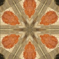 |
The group D1 is technically classed as a dihedral group it just consists of a single reflection.
| D1 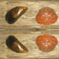 |
Orbifold and topology
An alternative way of specifying the groups is using Thurston's orbifold notation. It uses numbers to represent the order of rotation points, * for a reflection, x for a glide-reflection and o for the "wonder" with no aditional symmetries other than translations. Symbols are listed in order, number before a * represent cyclic rotations and those after dihedral rotations.
Each type of symmetry has a cost:
| Symmetry | Symbol | Cost |
|---|---|---|
| Cyclic Cn points | n (before a *) | $\frac{n-1}{n}$ |
| Reflection | * | 1 |
| Dihedral Dn points | n (after a *) | $\frac{n-1}{2n}$ |
| Glide-reflection | x | 1 |
| The wonder | o | 2 |
The "Magic theorem" states that for Wallpaper groups these costs must sum to 2. The theorem is derived from the calculating the Euler characteristic of a tesselation of the plane from multiple copies of the fundamental domain. Each vertex and edge is given a weighting, for example a C3 vertex has a weight of $\frac13$ as three copies of the vertex contribute to a single vertex in the tesselations, likewise edge have a weight of $\frac12$ and D2 vertex has a weight of $\frac14$. Costs for each symmetry are found from these weights and a calculation show the Euler chararateristic of the plane is $2-\text{total cost}=0$. A sketch proof of the result can be found in Geometry and the Imagination: The Euler characteristic of an orbifold
Some of the edges of the fundamental domain can be identified, so it forms a topologial manifold, $M$. If are lines of reflection it will be a manifold with boundary. This manifold is either a sphere (p2, p3, p4, p6) a disk (pmm, p3m1, p4m, p6m, pmg, cmm, p31m, p4g) a cylinder (pm), Klein bottle (pg), Möbius band (cm), real-projective plane (pgg) or torus (p1).
Further structure is added to form an orbifold where cyclic rotations give conical points, reflections lines give boundary points and dihedral rotations form corners on the boundary. There is a group actions $\mathbb{R}^2/\Gamma$ associated with each symmetry in the orbifold.
| Pure gyrations | ||
|---|---|---|
| These patterns are generated by a three or four cyclic rotation points. The two edges adjacent each rotation point are identified so the underlying manifold forms a topological sphere, with Euler chrarateristic, χ=2. Each n-fold rotation point gives a conical point in the orbifold with cost $1-\frac{1}{n}$. | ||
| p2: 2222 Four C2 rotations. Cost: $\frac12+\frac12+\frac12+\frac12=2$ Manifold: sphere Euler chrarateristic: χ=2 Chromatic number: 4 |
 |
 |
| p3: 333 Three C3 rotations. Cost: $\frac23+\frac23+\frac23=2$ Manifold: sphere Euler chrarateristic: χ=2 Chromatic number: 4 |
 |
 |
| p4: 442 Two C4 rotations and one C2 rotation. Cost: $\frac34+\frac34+\frac12=2$ Manifold: sphere Euler chrarateristic: χ=2 Chromatic number: 4 |
 |
 |
| p6: 632 One C6, one C3 and one C2 rotation. Cost: $\frac5/6+\frac23+\frac12=2$ Manifold: sphere Euler chrarateristic: χ=2 Chromatic number: 4 |
 |
 |
| Pure kalidoscopes | ||
| These patterns are generated by three or four dihedral rotations. The edges of the fundamental domain are lines of reflection, giving rise to a boundary of the orbifold. Hence the underlying manifold is a disk with Euler chrarateristic, χ=1. The boundary, *, has a cost of 1 and each n-fold dihedral rotation has a cost of $\frac{n-1}{2n}$. | ||
| pmm: *2222 One reflection, four D2 rotations. Cost: $1+\frac14+\frac14+\frac14+\frac14=2$ Manifold: disk Euler chrarateristic: χ=1 Chromatic number: 4 |
 |
 |
| p3m1: *333 One reflection, three D3 rotations. Cost: $1+\frac26+\frac26+\frac26=2$ Manifold: disk Euler chrarateristic: χ=1 Chromatic number: 4 |
 |
 |
| p4m: *442 One reflection, two D4 rotations and one D2 rotation. Cost: $1+\frac38+\frac38+\frac14=2$ Manifold: disk Euler chrarateristic: χ=1 Chromatic number: 4 |
 |
 |
| p6m: *632 One reflection, one D6, one D3 and one D2 rotation. Cost: $1+\frac{5}{12}+\frac26+\frac14=2$ Manifold: disk Euler chrarateristic: χ=1 Chromatic number: 4 |
 |
 |
| Parallel reflections | ||
| This patterns is generated by two parallel reflections and a translation. Two edges of the fundamental domain are lines of reflection, giving rise to a boundary of the orbifold, the other two are identified. Hence the underlying manifold is a cylinder with Euler chrarateristic, χ=0. | ||
| pm: ** Two reflections. Cost: $1+1=2$ Manifold: cylinder Euler chrarateristic: χ=0 Chromatic number: 4 |
 |
 |
| Hybrid types | ||
| These patterns have both cyclic points, reflections and sometimes dihedral rotations. The lines of reflection give a boundary of the orbifold, so the underlying manifold is a disk with Euler chrarateristic, χ=1. The cyclic rotations correspond to conical points and the dihedral rotations give corners. | ||
| pmg: 22* Two C2 rotations and one line of reflections. Cost: $\frac12+\frac12+1=2$ Manifold: disk Euler chrarateristic: χ=1 Chromatic number: 4 |
 |
 |
| cmm: 2*22 One C2 rotation, one reflection and two D2 reflections. Cost: $\frac12+1+\frac14+\frac14=2$ Manifold: disk Euler chrarateristic: χ=1 Chromatic number: 4 |
 |
 |
| p31m: 3*3 One C3 rotation, one reflection and one D3 rotation. Cost: $\frac13+1+\frac26=2$ Manifold: disk Euler chrarateristic: χ=1 Chromatic number: 4 |
 |
 |
| p4g: 4*2 One C4 rotation, one reflections and one D2 rotation. Cost: $\frac34+1+\frac14=2$ Manifold: disk Euler chrarateristic: χ=1 Chromatic number: 4 |
 |
 |
| Glide-reflections and cross-caps | ||
| These patterns all have glide refleftions indicated by a x with cost 1. Oposite edges are idetified in a revese direction, yielding non-orientable manifolds. | ||
| pg: xx Two parallel glide-reflections. Cost: $1+1=2$ Manifold: Klein bottle Euler chrarateristic, χ=0. Chromatic number: 6 |
 |
 |
| cm: *x A reflection and a glide-reflections. Cost: $1+1=2$ Manifold: Möbius band Euler chrarateristic: χ=0. Chromatic number: 6 |
 |
 |
| pgg: 22x Two C2 rotations, and a glide-reflection. Cost: $\frac12+\frac12+1=2$ Manifold: real-projective plane RP² Euler chrarateristic: χ=1. Chromatic number: 6 |
 |
 |
| The wonder: just translations | ||
| This pattern has no aditional symmetries. Oposite edges are identified, so the underlying manifold is a torus with Euler chrarateristic, χ=0. | ||
| p1: o Cost: $2$ Manifold: torus Euler chrarateristic: χ=0. Chromatic number: 7 < |
 |
 |
Chromatic number for orbifolds and tilings
Given a wallpaper group with a specified lattice, we can consider the set of tilings that are invarient under the that group. Similar to the four-colour theorem for planer graphs we can consider the Chromatic number for the wallpaper group:
The smallest number χ, such that any tiling invarient under the group can be coloured with χ colours such that:
- No two tiles with the same colour share a common edge
- The colouring is invarient under that tiling
Calculating the chromatic number is easy, it is the same as the chromatic number of the underlying topological manifold of the orbifold, and the chromatic numbers of the each type of manifold are well known - Torus: 7, Möbius band: 6, Klein bottle: 6, Projective Plane: 6, sphere: 4, disk: 4, open cylinder or anulus: 4. All that remains is to find a tiling that acheives the maximum bound. Again there are well known graphs on the various manifold that acheive the maximum, so we simply have unwrap these graphs to form a tiling of the plane. We give examples of each of these below and discuss how the underlying manifold is derived.
P1, manifold: torus, chromatic number: 7
Given a topological space X and a group G we can form the quotient space by factoring out the group action. Say with the P1 group

Using a motif of Beanish from Tales of the beanworld.
Factoring out the group action generated by the two translations gives a single cell with opposite edges are identified.

We can wrap the image around a cylinder, so the blue arrows match, and then join the top of the cylinder to the bottom to form a torus:

The torus has Euler characteristic χ=0, and following the Heawood conjecture any tiling with this symmetry can be coloured with 7 colours, so that no two faces of the same colour share an edge. One such tiling is based on hexagons.
|
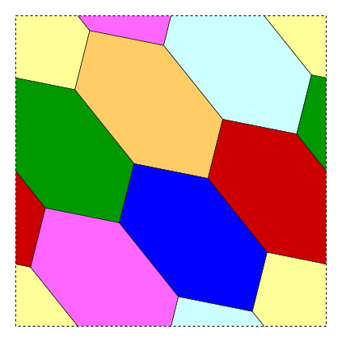 |
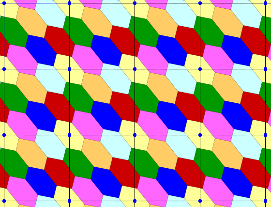 |
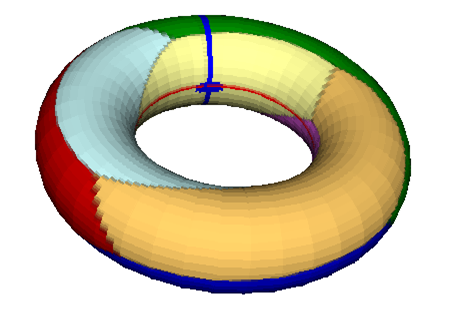 |
| Unit cell | Wallpaper pattern | Wrapped around a torus |
CM, manifold: Möbius band, chromatic number: 6
This pattern has a reflections and a parallel glide-reflection.

Folding along the reflection lines gives a strip with glide-reflection. The fundametal domain has top and bottom identified in opposite directions, and forms a Möbius band.

| 
| 
|
| A strip formed by folding along the reflection lines, has a glide-reflection. | The unit cell has top and bottom identified, but in opposite directions: | Joining edges forms a Möbius band. |
The Euler charateristic of the Möbius band is 0, and in 1910 Heinrich Tietze found a subdivision into six mutally adjacent regions. This can be used as the basis of a tiling of the plane requiring 6 colours.

|

|

|
| Unit cell | Wallpaper pattern | Wrapped around a Möbius band |
PG: xx
This pattern is generated by two parallel glide reflections. So the motif is translated in one direction and flipped and translated in the other direction. The unit cell has opposite edges identifed, one pair with the same orientation, and the other with reversed orientation. Identifying edges gives a Klein bottle.
| 
|
| Wallpaper pattern | Unit cell |
This has Euler characteristic χ=0, and chromatic number 6.

|

|
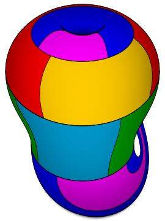 |
| Unit cell | Wallpaper pattern | Wrapped around a Klien bottle. (source) |
{kind=link}
PGG: 22x
This pattern has two perpendicular glide reflections and two C2 cyclic rotations. So the motif is flipped and translated in the both direction. The unit cell has opposite edges identifed, each pair with reversed orientation, and joining the opposite edges gives a real projective plane.
| 
| 
|
| Wallpaper pattern | Unit cell | Wrapped around a real projective plane. |
This has Euler characteristic χ=1, and chromatic number 6.

|

|

|
| Unit cell | Wallpaper pattern | Wrapped around a Klien bottle. |
The cell division here is adapted from mathcurve.com
PM, manifold: cylinder, chromatic number 4
The PM pattern has two parallel reflections.

Take a horizontal strip with top and bottom identified, fold along the vertical mirror lines, forming a concertina. Identify top and bottom edges to form a cylinder. The green edges correspond to the two lines of reflection, which always form a boundary on the orbifold.

| 
| 
|
| A strip formed by folding along the reflection lines. | The unit cell has top and bottom identified, so it forms a cylinder. | Joining edges forms a cylinder. |
The cylinder has Euler characteristic χ=0, and had chromatic number 4, so four colours surfice.

| 
| 
|
| Fundamental domain | Wallpaper pattern | Orbifold |
Groups generated by cyclic rotations
In terms of colouring the interesting groups are those with a chromatic number greater than 4 are shown above. The rest are either topological spheres or disks, and can be coloured with 4 colours. First we consider the groups generated by cyclic rotations P2 (2222), P3 (333), P4 (442) and P6 (632).
P2, manifold: sphere, chromatic number 4
The P2 is generated by four C2 rotations, around the mid-points of a rectangular fundamental domain. The two halves of each edge are identified, so the edges join up to form a sphere.


| 
| 
|
| Unit cell | Top of sphere | Bottom of sphere |
A tesselation requiring 4 colours is easy to find. Start by considering a tetrahedral polygonisation of the sphere, with four mutually adjacent triangual faces, each of a different colour. Such a polygonisation can be arranged so that each of the four rotation points lie inside one of the four faces. Next unwrap this to form the fundamental domain, and apply the symetries to form the tiling.


| 
| 
|
| Unit cell | Top of sphere | Bottom of sphere |
P3, P4, P6
A similar process can be used to the other pure rotational groups, P3, P4 and P6.

| 
| 
|
| P3: 333 | P4: 442 | P6: 632 |
In each case the pattern is generated by three rotations. The tiling is chosen so that each rotation point lies in the centre of a face, the fourth triangular face is chosen in the middle of the fundamental domain.
Groups generated by dihedral reflections
The groups PMM, P3M1, P4M and P6M, are all generated by dihedral rotations. Each edge of the fundamental domain is a reflection line which form an edge in the underlying manifold. Hence the manifold is a topological disk with chromatic number 4.
Finding tilings that require four colours is easy here. Take an domain with a small triangle in the centre and draw lines outward from the corners. This froms a square or triangle with four mutually adjacent regions.

| 
| 
| 
|
| PMM domain | PMM wallpaper | P3M1 domain | P3M1 wallpaper |

| 
| 
| 
|
| P4M domain | P4M wallpaper | P6M domain | P6M wallpaper |
For these groups the orbifold a polygon coresponding to the fundamental domain, the reflection lines form the boundary of the orbifold, each dihedral rotation point giving a vertex. Topologically this is a disk.

|
| Orbifolds for PMM, P3M1, P4M and P6M |
Mixed types
The groups CMM, P31M and P4G all have both cyclic rotations and dihedral rotations. The lines of reflection gives an edge around the underlying manifold, a topological disk, with corners for each dihedral rotation. Cyclic rottion point lie in the middle of the disk. Each pattern has chromatic number 4. PMG is similar, it has a line of reflection and two cyclic rotation points, by no dihedral rotations.

| 
| 
| 
| 
| 
|
| PMG domain | PMG wallpaper | PMG underlying manifold | CMM domain | CMM wallpaper | CMM underlying manifold |

| 
| 
| 
| 
| 
|
| P4G domain | P4G wallpaper | P4G orbifold | P31M domain | P31M wallpaper |
Summery of colourings
| Groups | type | Underlying manifold | Chromatic number | |||
|---|---|---|---|---|---|---|
| P1 | Torus | 7 | ||||
| CM | Möbius band | 6 | ||||
| PG | Klein bottle | 6 | ||||
| PGG | Projective plane | 6 | ||||
| PM | Cylinder | 4 | ||||
| P2 | P3 | P4 | P6 | pure rotation | Sphere | 4 |
| PMM | P3M | P4M | P6M | dihedral rotations | Disk | 4 |
| CMM | PMG | P31M | P4G | mixed | Disk | 4 |
References
- Wikipedia: Wallpaper groups.
- nLab: Riemannian orbifold
- Patrick J. Morandi The Classification of Wallpaper Patterns: From Group Cohomology to Escher's Tessellations 2003 - Describes how cohomology can be used to classify wallpaper patterns.
- João Guerreiro Orbifolds and Wallpaper Patterns 2009
- J. H. Conway, H. Burgiel, C. Goodman-Stauss, The Symmetries of Things, Taylor & Francais Group, New York, 2008. - A good ilustrated example of wallpaper patterns and orbifolds.
Copyright R Morris 2025